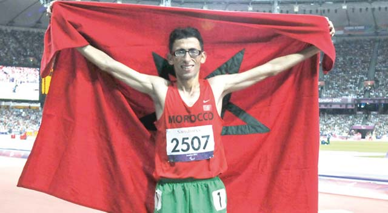

Casablanca – Les athlètes paralympiques marocains ont signé une participation distinguée lors des Jeux paralympiques de Tokyo, en décrochant 11 médailles, dont 4 en or, une performance qui en dit long sur les ambitions élevées de ces sportifs de haut niveau.Aussi bien au niveau individuel que collectif, les athlètes paralympiques ont brillé de mille feux lors de cette grand-messe du sport paralympique mondial, portant haut le drapeau national et honorant comme il se doit le sport marocain.
Le champion marocain, Amine Chentouf (classe T12), a offert au Maroc une médaille d’or au marathon, signant un chrono de 2h 21min 43sec, lui permettant de décrocher un nouveau record paralympique.A ces côtés, Abdeslam Hili, Zakaria Derhem et Ayoub Sadni ont également décroché le précieux métal, tandis que Fouzia Ksioui, Yousra Karim, Mohamed Amguoun et Azeddine Nouiri ont remporté 4 médailles en argent. La médaille de bronze est quant à elle revenue à Hayat El Garaa, Saida Amoudi et à l’équipe nationale de cécifoot qui a été sous le feu des projecteurs à la faveur de sa performance remarquable, notamment face à l’Argentine et au Brésil.
Cette participation marocaine, la 9è depuis Séoul 1988, a été hautement saluée, notamment par le ministre de l’Education nationale, du préscolaire et des sports, Chakib Benmoussa qui a souligné, lors d’une récente cérémonie en l’honneur des sportifs marocains sacrés aux Jeux Paralympiques de Tokyo, que le sport paralympique promet un bel avenir au Maroc.
Le président de la Fédération Royale marocaine des sports pour personnes en situation de handicap (FRMSPSH), Hamid El Aouni, avait, quant à lui, indiqué que le Royaume enregistre des résultats probants dans les différentes disciplines du sport paralympique depuis sa première participation en 1988.
En effet, le voyage à Tokyo a été des plus fructueux pour la délégation marocaine composée pour la 1ère fois de 38 athlètes, avec 11 médailles glanées, devançant les éditions de Pékin 2008 et de Rio 2016 avec 7 médailles décrochées. Le para-athlétisme a été le plus représenté avec 19 athlètes, 3 en dynamophilie, 3 en para-taekwondo, 2 en tennis en fauteuil roulant et un cycliste, en plus de la remarquable équipe nationale de cécifoot composée de 10 joueurs qui a fait sensation lors de ces jeux, avec des noms qui se sont démarqués par leur performance à l’instar du talentueux Zouhair Snisla.